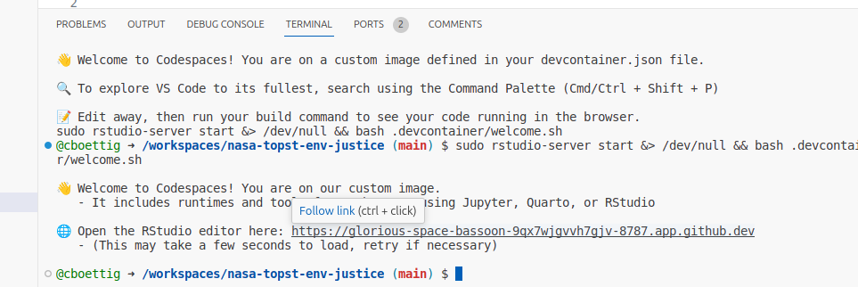

Portable Reproducibility
Good reproducibility is like an onion – it comes in many layers. There’s a purpose to containerized environments deployed on cloud-hosted virtual machines. And we believe students should be able to leverage those things, easily and rapidly deploying cloud-hosted images, and will get to that here. But most of the time, we just want to copy-paste a few lines of code and expect it to work. Many layers of the onion can be found between these two extremes – from package dependencies and system dependencies to containers, orchestration, metadata, even hardware requirements.
In the examples here, copy-pasting the code blocks into your preferred environment should work in most cases. Sometimes it may be necessary to install specific libraries or specific versions of those libraries. And for fastest setup and maximum reproducibility, users can deploy the fully containerized environment. It should be as easy as possible to grab the whole onion and take it where you want it – be that a local VSCode editor on your laptop, or an RStudio Server instance running up on Microsoft Azure cloud.
Notebooks on GitHub
Each of the recipes on this site correspond to a Quarto or Jupyter notebook in a GitHub repository (see contents/ directory or footer links). Such notebooks form the basis of technical documentation and publishing to a wide array of formats. A _quarto.yml configuration file in the repository root determines the website layout. Notebooks can be run interactively in any appropriate environment (RStudio, JupyterLab, VSCode, etc, see below for free online platforms). Type quarto render from the bash command line or use quarto::quarto_preview() from the R console to preview the entire site.
A Portable compute environment
On the cloud: Gitpod or Codespaces


Both GitHub Codespaces and Gitpod provide a fast and simple way to enter into integrated development environments such as VSCode, RStudio, or JupyterLab on free, cloud-based virtual machines. Codespaces has a free tier of 60 hours/month, Gitpod of 50 hours a month, both offer paid plans for additional use and larger compute instances. Small codespace instances are also free to instructors
By clicking on one of the buttons in GitHub, users will be placed into a free cloud-based virtual machine running a VSCode editor in their web browser. The first setup can take a few minutes to complete.
Additionally, this also provides access to an RStudio environment on an embedded port for users who prefer that editor to VSCode. Once the Codespace has fully completed loading, it will include a link in a second welcome message in the Terminal to access RStudio like so:

The RStudio link can also always be accessed from the Ports tab under the port labeled “Rstudio” (8787). (Gitpod will show a pop-up message to open this port instead.)
Both Codespaces and Gitpod can be configured with custom compute environments by supplying a docker image. Both the VSCode and RStudio editors run in the same underlying custom Docker container. This repository includes a Dockerfile defining this compute environment which includes specific versions of R and python packages, the latest releases of the OSGeo C libraries GDAL, PROJ, and GEOS that power many spatial operations in both languages. These elements are pre-compiled in a Docker container based on the latest Ubuntu LTS release (22.04 at the time of writing), which itself is build according to the Dockerfile found in this repository using a GitHub Action. The devcontainer.json configuration will also set up relevant VSCode extensions for both both Jupyter and Quarto notebooks, with each supporting both R and Python.
Locally: VSCode
Open this repository in a local Visual Studio Code editor on a Mac, Linux, or Windows laptop and you will probably be prompted “Do you want to open this in project in a Dev Container?” If you agree, VSCode will attempt to use a local Docker installation to pull a container with much of the required software already installed. This uses the same Docker container and enables all the same extensions in VSCode, including RStudio server on the embedded port.
Of course, users can open this project in a local VSCode or any other favorite editor without opening in the devcontainer. The user assumes responsibility to install necessary software, i.e. the packages listed in requirements.txt or install.R. Note that doing so does not ensure that the same version of system libraries like GDAL, PROJ, or GEOS will necessarily be used. For most operations this should not matter, but users on older versions of GDAL may encounter worse performance or other difficulties.
Anywhere: Docker
We can sidesteps elements specific to the VSCode editor defined in the devcontainer.json configuration while still leveraging the same system libraries and pre-built packages. For example, a user could also choose to run (or extend) the underlying docker container independently, e.g.
docker run --rm -ti ghcr.io/boettiger-lab/nasa-tops:latest bashwhich opens a bash terminal inside the container. This approach is also compatible with most HPC setups using singularity instead of docker.
Some users may not be familiar with editing and running code entirely from a bash shell, so the container also includes RStudio server and thus can be run to launch RStudio in an open port instead,
docker run -d -p 8787:8787 --user root -e DISABLE_AUTH=true \
ghcr.io/boettiger-lab/nasa-tops:latestand visit http://localhost:8787 to connect.